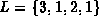
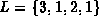
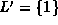
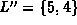

Data Structures and Algorithms
with Object-Oriented Design Patterns in Java
Data Structures and Algorithms
with Object-Oriented Design Patterns in JavaThe second exchange sort we consider is the quicksort algorithm. Quicksort is a divide-and-conquer style algorithm. A divide-and-conquer algorithm solves a given problem by splitting it into two or more smaller subproblems, recursively solving each of the subproblems, and then combining the solutions to the smaller problems to obtain a solution to the original one.
To sort the sequence  ,
quicksort performs the following steps:
,
quicksort performs the following steps:
Notice that the pivot is now in the position in which it belongs in the sorted sequence, since all the elements to the left of the pivot are less than or equal to the pivot and all the elements to the right are greater than or equal to it.
The first step of the algorithm is a crucial one. We have not specified how to select the pivot. Fortunately, the sorting algorithm works no matter which element is chosen to be the pivot. However, the pivot selection affects directly the running time of the algorithm. If we choose poorly the running time will be poor.
Figure  illustrates the detailed operation of quicksort
as it sorts the sequence .
To begin the sort, we select a pivot.
In this example, the value 4 in the last array position is chosen.
Next, the remaining elements are partitioned into two sequences,
one which contains values less than or equal to 4 ( )
and one which contains values greater than or equal to 4
( ).
Notice that the partitioning is accomplished by exchanging elements.
This is why quicksort is considered to be an exchange sort.
illustrates the detailed operation of quicksort
as it sorts the sequence .
To begin the sort, we select a pivot.
In this example, the value 4 in the last array position is chosen.
Next, the remaining elements are partitioned into two sequences,
one which contains values less than or equal to 4 ( )
and one which contains values greater than or equal to 4
( ).
Notice that the partitioning is accomplished by exchanging elements.
This is why quicksort is considered to be an exchange sort.
After the partitioning, the pivot is inserted between the two sequences. This is called restoring the pivot. To restore the pivot, we simply exchange it with the first element of G. Notice that the 4 is in its correct position in the sorted sequence and it is not considered any further.
Now the quicksort algorithm calls itself recursively, first to sort the sequence ; second to sort the sequence . The quicksort of L selects 1 as the pivot, and creates the two subsequences  and . Similarly, the quicksort of G uses 5 as the pivot and creates the two subsequences  and .
At this point in the example the recursion has been stopped.
It turns out that to keep the code simple,
quicksort algorithms usually stop the recursion when the length
of a subsequence falls below a critical value called the cut-off.
In this example, the cut-off is two
(i.e., a subsequence of two or fewer elements is not sorted).
This means that when the algorithm terminates,
the sequence is not yet sorted.
However as Figure shows,
the sequence is almost sorted.
In fact, every element is guaranteed to be less than two positions
away from its final resting place.
We can complete the sorting of the sequence by using a straight insertion sort.
In Section it is shown that
straight insertion is quite good at sorting sequences that are almost sorted.
In fact, if we know that every element of the sequence is at most d
positions from its final resting place,
the running time of straight insertion is O(dn) and
since d=2 is a constant, the running time is O(n).
 Copyright © 1998 by Bruno R. Preiss, P.Eng. All rights reserved.
Copyright © 1998 by Bruno R. Preiss, P.Eng. All rights reserved.